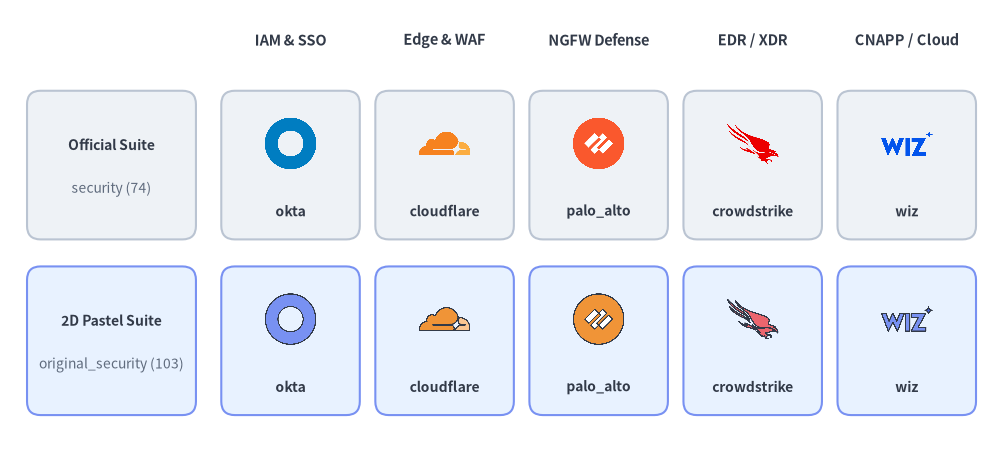
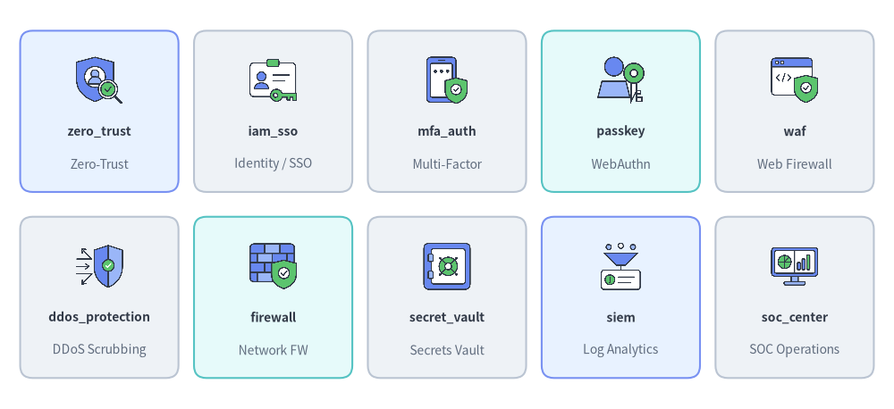
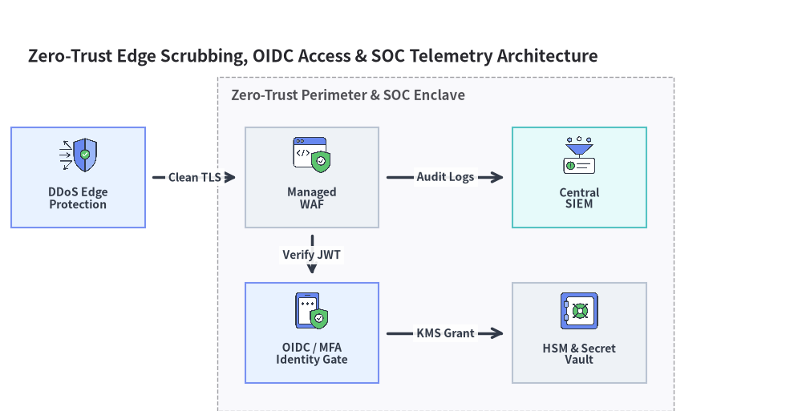

Security & Zero-Trust Icons (security & original_security)
Drawlib provides two paired icon modules for cybersecurity, identity and access management (IAM/SSO), network defense, endpoint protection (EDR/XDR), and SIEM/SOAR operations: drawlib.icons.security (SecurityIcon, 74 official security vendor and open-source tool logos) and drawlib.icons.original_security (OriginalSecurityIcon, 103 flat 2D pastel icons comprising all 74 brand twins plus 29 vendor-neutral security & zero-trust concept icons). Both modules follow the unified API documented in Icons Overview and integrate seamlessly with Architecture Diagrams.

Source Code
from drawlib.canvas import save, setup
from drawlib.icons import original_security, security
from drawlib.shapes import rectangle
from drawlib.styles import Styles
from drawlib.text import text
setup(width=148, height=68)
columns = [
("IAM & SSO", "okta", security.okta, original_security.okta),
("Edge & WAF", "cloudflare", security.cloudflare, original_security.cloudflare),
("NGFW Defense", "palo_alto", security.palo_alto, original_security.palo_alto),
("EDR / XDR", "crowdstrike", security.crowdstrike, original_security.crowdstrike),
("CNAPP / Cloud", "wiz", security.wiz, original_security.wiz),
]
for col_idx, (cat_label, _, _, _) in enumerate(columns):
cx = 43.0 + col_idx * 22.8
text((cx, 62.0), cat_label, style=Styles.DarkBold.patch(text_size=10.5))
rows = [
(43.5, "Official Suite", "security (74)", Styles.Neutral),
(17.5, "2D Pastel Suite", "original_security (103)", Styles.PrimaryNeutral),
]
for row_idx, (cy, row_title, row_sub, row_style) in enumerate(rows):
rectangle((16.5, cy), width=25.0, height=22.0, style=row_style.patch(shape_r=2))
text((16.5, cy + 3.0), row_title, style=Styles.DarkBold.patch(text_size=10.0))
text((16.5, cy - 3.5), row_sub, style=Styles.Muted.patch(text_size=10.0))
for col_idx, (_, fn_name, fn_off, fn_orig) in enumerate(columns):
cx = 43.0 + col_idx * 22.8
rectangle((cx, cy), width=20.5, height=22.0, style=row_style.patch(shape_r=2))
icon_fn = fn_off if row_idx == 0 else fn_orig
icon_fn((cx, cy + 3.2), width=8.5, style=Styles.Primary)
text((cx, cy - 6.8), fn_name, style=Styles.DarkBold.patch(text_size=10.0))
save()
1. API Signature & Twin Module Structure
All icon functions in drawlib.icons.security and drawlib.icons.original_security accept a center coordinate xy=(cx, cy), a horizontal width in canvas units (1:1 square aspect ratio), and a required style:
from drawlib.diagrams.architecture import Node, OriginalSecurityIcon, SecurityIcon
from drawlib.icons import (
original_security,
original_security_icon,
security,
security_icon,
)
from drawlib.styles import Styles
# 1. Direct module function calls (74 shared brand icons + 29 concept icons in original_security)
security.okta((30, 25), width=10.0, style=Styles.Primary)
original_security.okta((55, 25), width=10.0, style=Styles.Primary)
original_security.zero_trust((80, 25), width=10.0, style=Styles.Primary)
original_security.waf((105, 25), width=10.0, style=Styles.Primary)
# 2. Dynamic string lookup helpers
security_icon((30, 10), width=9.0, name="crowdstrike", style=Styles.Primary)
original_security_icon((55, 10), width=9.0, name="ddos_protection", style=Styles.Primary)
# 3. Strongly typed Enums for ArchitectureDiagram & SequenceDiagram
idp_node = Node("Okta IdP", icon=SecurityIcon.OKTA)
waf_node = Node("Edge WAF", icon=OriginalSecurityIcon.WAF)
| Feature | drawlib.icons.security |
drawlib.icons.original_security |
|---|---|---|
| Visual Style | Official security vendor & open-source project logos | Cohesive 2D pastel brand twins + vendor-neutral security concept icons |
| Total Canonical Icons | 74 official brand icons | 103 (74 brand twins + 29 security concept icons) |
| Diagram Enum | SecurityIcon.<NAME> |
OriginalSecurityIcon.<NAME> |
| Dynamic Dispatcher | security_icon(xy, width, name=..., style=...) |
original_security_icon(xy, width, name=..., style=...) |
| Asset Package | icon_security |
icon_original_security |
2. Brand & Vendor Security Icons (74 Icons in Both Modules)
Both security and original_security share 74 canonical brand and open-source tool names covering identity providers, hardware keys, next-generation firewalls (NGFW), SASE/ZTNA gateways, endpoint detection and response (EDR), cloud security (CNAPP), and application security testing (SAST/DAST):
Source Code
from drawlib.canvas import save, setup
from drawlib.icons import security
from drawlib.shapes import rectangle
from drawlib.styles import Styles
from drawlib.text import text
setup(width=144, height=66)
row1 = [
("okta", "IAM / SSO", security.okta, Styles.Neutral),
("entra_id", "Directory / IdP", security.entra_id, Styles.PrimaryNeutral),
("auth0", "Customer IAM", security.auth0, Styles.Neutral),
("yubico", "Hardware Key", security.yubico, Styles.SecondaryNeutral),
("cloudflare", "WAF & DDoS", security.cloudflare, Styles.Neutral),
]
row2 = [
("palo_alto", "NGFW / SASE", security.palo_alto, Styles.Neutral),
("zscaler", "Zero-Trust", security.zscaler, Styles.SecondaryNeutral),
("crowdstrike", "EDR / XDR", security.crowdstrike, Styles.PrimaryNeutral),
("wiz", "Cloud CNAPP", security.wiz, Styles.Neutral),
("wazuh", "Open XDR/SIEM", security.wazuh, Styles.Neutral),
]
for row_idx, items in enumerate([row1, row2]):
cy = 48.0 if row_idx == 0 else 18.0
for col_idx, (fn_name, cat, icon_fn, card_st) in enumerate(items):
cx = 16.0 + col_idx * 28.0
rectangle((cx, cy), width=25.5, height=26.0, style=card_st.patch(shape_r=2))
icon_fn((cx, cy + 5.0), width=8.5, style=Styles.Primary)
text((cx, cy - 3.2), fn_name, style=Styles.DarkBold.patch(text_size=10.0))
text((cx, cy - 8.5), cat, style=Styles.Muted.patch(text_size=10.0))
save()
2.1. Complete Shared Brand Icon Reference (74 Canonical Names)
Every function name below is available identically as security.<name>() (SecurityIcon.<NAME>) and original_security.<name>() (OriginalSecurityIcon.<NAME>):
| Category | Count | Canonical Function Names (security.* & original_security.*) |
|---|---|---|
| Identity, SSO, MFA & Authorization | 16 | auth0, authelia, authentik, cerbos, clerk, duo, entra_id, okta, onelogin, openfga, ory, permit_io, ping_identity, stytch, supertokens, workos |
| Password Managers, PAM, Bastion & Hardware Keys | 5 | bitwarden, cyberark, onepassword, teleport, yubico |
| PKI, TLS Certificates & Cryptography | 5 | digicert, gnupg, lets_encrypt, sectigo, venafi |
| Network Security, NGFW, WAF, SASE & VPN | 9 | checkpoint, cloudflare, f5, fortinet, imperva, netskope, palo_alto, wireguard, zscaler |
| Endpoint Protection (EDR/XDR) & Antivirus | 10 | crowdstrike, kaspersky, malwarebytes, microsoft_defender, osquery, sentinelone, sophos, symantec, trellix, trend_micro |
| Cloud Security (CNAPP), Vulnerability & VM | 8 | aqua_security, lacework, prisma_cloud, qualys, rapid7, sysdig, tenable, wiz |
| SIEM, SOAR, NDR, IDS/IPS & Email Security | 12 | crowdsec, darktrace, google_secops, graylog, proofpoint, qradar, snort, sumo_logic, suricata, vectra_ai, wazuh, zeek |
| AppSec (SAST/DAST), Pentesting & Packet Analysis | 9 | burp_suite, checkmarx, gitleaks, metasploit, nmap, owasp, semgrep, veracode, wireshark |
3. Vendor-Neutral Security Concept Icons (29 Icons in original_security)
When designing vendor-neutral security architectures, threat models, OAuth2/OIDC authentication flows, or SOC playbooks, drawlib.icons.original_security (OriginalSecurityIcon) provides 29 purpose-built security concept icons:

Source Code
from drawlib.canvas import save, setup
from drawlib.icons import original_security
from drawlib.shapes import rectangle
from drawlib.styles import Styles
from drawlib.text import text
setup(width=144, height=66)
row1 = [
("zero_trust", "Zero-Trust", original_security.zero_trust, Styles.PrimaryNeutral),
("iam_sso", "Identity / SSO", original_security.iam_sso, Styles.Neutral),
("mfa_auth", "Multi-Factor", original_security.mfa_auth, Styles.Neutral),
("passkey", "WebAuthn", original_security.passkey, Styles.SecondaryNeutral),
("waf", "Web Firewall", original_security.waf, Styles.Neutral),
]
row2 = [
("ddos_protection", "DDoS Scrubbing", original_security.ddos_protection, Styles.Neutral),
("firewall", "Network FW", original_security.firewall, Styles.SecondaryNeutral),
("secret_vault", "Secrets Vault", original_security.secret_vault, Styles.Neutral),
("siem", "Log Analytics", original_security.siem, Styles.PrimaryNeutral),
("soc_center", "SOC Operations", original_security.soc_center, Styles.Neutral),
]
for row_idx, items in enumerate([row1, row2]):
cy = 48.0 if row_idx == 0 else 18.0
for col_idx, (fn_name, cat, icon_fn, card_st) in enumerate(items):
cx = 16.0 + col_idx * 28.0
rectangle((cx, cy), width=25.5, height=26.0, style=card_st.patch(shape_r=2))
icon_fn((cx, cy + 5.0), width=8.5, style=Styles.Primary)
text((cx, cy - 3.2), fn_name, style=Styles.DarkBold.patch(text_size=10.0))
text((cx, cy - 8.5), cat, style=Styles.Muted.patch(text_size=10.0))
save()
3.1. Complete Vendor-Neutral Security Concept Reference (29 Canonical Names)
| Category | Count | Canonical Function Names (original_security.* / OriginalSecurityIcon.*) |
|---|---|---|
| Identity, Auth Protocols & Tokens | 8 | directory_service, iam_sso, jwt, mfa_auth, oauth2, oidc, passkey, saml |
| Zero-Trust, Perimeter & Network Defense | 9 | casb, ddos_protection, firewall, honeypot, ids_ips, pam_bastion, vpn_gateway, waf, zero_trust |
| Data Protection, Cryptography & Secrets | 5 | dlp, encryption, hsm_kms, pki_ca, secret_vault |
| SOC, Endpoint & Threat Operations | 7 | edr_xdr, email_security, siem, soar, soc_center, threat_intel, vulnerability_scan |
4. Practical Architecture Diagram
The following diagram illustrates a Zero-Trust edge and SOC telemetry pipeline using ArchitectureDiagram with OriginalSecurityIcon:
from drawlib.canvas import clear, save, setup
from drawlib.diagrams.architecture import (
ArchitectureDiagram,
Node,
NodeGroup,
OriginalSecurityIcon,
)
from drawlib.styles import Styles
clear()
setup(width=144, height=74)
d = ArchitectureDiagram(
node_style=Styles.Primary,
node_text_style=Styles.DarkBold.patch(text_size=10.0),
edge_style=Styles.DarkBold,
edge_text_style=Styles.DarkBold.patch(text_size=10.0),
node_card_style=Styles.Neutral,
title="Zero-Trust Edge Scrubbing, OIDC Access & SOC Telemetry Architecture",
)
ddos = d.add(
Node(
"DDoS Edge\nProtection",
width=24,
height=18,
icon=OriginalSecurityIcon.DDOS_PROTECTION,
icon_size=7.5,
card_style=Styles.PrimaryNeutral,
),
xy=(10.0, 38.0),
)
perimeter = d.add(NodeGroup(title="Zero-Trust Perimeter & SOC Enclave", padding=5.0), xy=(40.0, 4.0))
waf = perimeter.add(
Node(
"Managed\nWAF",
width=24,
height=18,
icon=OriginalSecurityIcon.WAF,
icon_size=7.5,
),
xy=(12.0, 34.0),
)
sso = perimeter.add(
Node(
"OIDC / MFA\nIdentity Gate",
width=24,
height=18,
icon=OriginalSecurityIcon.MFA_AUTH,
icon_size=7.5,
card_style=Styles.PrimaryNeutral,
),
xy=(12.0, 6.0),
)
siem = perimeter.add(
Node(
"Central\nSIEM",
width=24,
height=18,
icon=OriginalSecurityIcon.SIEM,
icon_size=7.5,
card_style=Styles.SecondaryNeutral,
),
xy=(60.0, 34.0),
)
vault = perimeter.add(
Node(
"HSM & Secret\nVault",
width=24,
height=18,
icon=OriginalSecurityIcon.SECRET_VAULT,
icon_size=7.5,
),
xy=(60.0, 6.0),
)
d.connect(ddos, waf, label="Clean TLS", padding=1.5)
d.connect(waf, sso, label="Verify JWT", padding=1.5)
d.connect(waf, siem, label="Audit Logs", padding=1.5)
d.connect(sso, vault, label="KMS Grant", padding=1.5)
d.draw(xy=(4.0, 4.0))
save()

[!TIP] For physical security gates and surveillance cameras, see Data Center & Facility Icons (
facility&original_facility). For DevSecOps and CI/CD pipeline tooling (vault,trivy,sonarqube), see DevOps & Observability Icons (devops&original_devops).